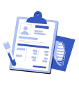
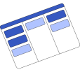
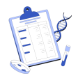
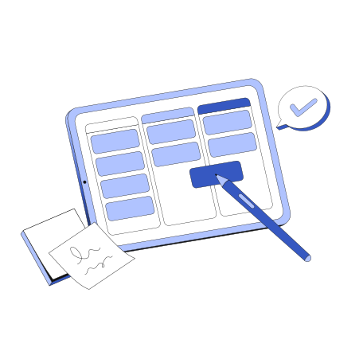
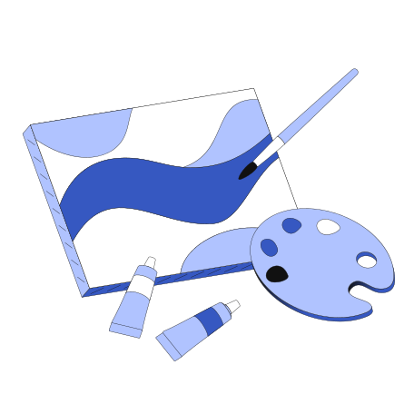
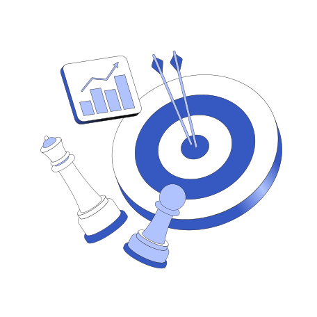
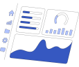

Veja como a ferramenta pode lhe ajudar...
AIP - Ambiente Educacional de Inovação e Prototipagem irá beneficiar os envolvidos na construção de seus projetos ao oferecer uma fonte rica de inspiração, referências e soluções já validadas. Com acesso a uma variedade de protótipos bem-sucedidos, estudantes, professores e pesquisadores poderão acelerar o desenvolvimento de suas ideias, economizando tempo e esforço, e estimulando a colaboração entre a comunidade estudantil e acadêmica.
Aqui está o seu plano! Preencha as ferramentas para completá-lo
Etapa 0 - Informações do Plano de Negócio
Etapa 1 - Criatividade e Ideação
Levantamento de Problemas
Persona e Mapa de Valor
Ferramentas de Criação e Ideação

Pesquisa Metaproctual
Etapa 2 - Modelagem de Projetos
Análise de viabilidade Economica e Financeira
Canvas - Proposta de Valor

BMG - Canvas

Validação e Cartão de Testes
Etapa 3 - Prototipagem de Negocios Inovadores

Project Model Canvas

Protótipos

Matriz de Decisão
MVP -Mínimo Produto Viável
Prova de Conceito

Relatório Técnico